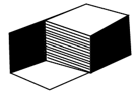

시각디자인산업기사 (2009-08-30 기출문제)
1과목: 색채학
1. 다음 중 보색 관계가 아닌 것은? (단, 20색상환을 기준으로 한다.)
- 노랑(Y)-남색(PB)
- 빨강(R)-청록(BG)
- 주황(YR)-보라(P)
- 자주(RP)-녹색(G)
(정답률: 알수없음)

2. 오스트발트(Ostwald)의 조화론 중 등흑계열 조화에 해당하는 것은?
- pa - pg - pn
- pa - ia - ca
- ca - ga - ge
- gc - lg - pl
(정답률: 알수없음)
3. 고호, 쇠라, 시냑 등 인상파 화가들이 표현기법으로 관계 깊은 것은?
- 계시대비
- 동시대비
- 회전혼합
- 병치혼합
(정답률: 알수없음)
4. 빛이 프리즘을 통화 할 때 나타나는 분광현상 중 제일 굴절현상이 큰 색채는?
- 보라
- 초록
- 빨강
- 노랑
(정답률: 알수없음)
5. 다음 중 유사색 조화에 해당되는 것은?
- 5Y, 10YR
- 5P, 10BG
- 10BG, 10RP
- 5P, 10GY
(정답률: 알수없음)
6. 다음 중 표면색 (surface color)에 대한 용어의 정의는?
- 광원에서 나오는 빛의 색
- 빛의 반사 또는 투과된 색
- 빛을 확산 반사하여 불투명 물체의 겉면에 속하는 것처럼 지각되는 색
- 구멍을 통하여 보이는 색과 같이 빛이 발하는 물체가 무엇을까? 하는 인식을 방해하는 조건에서 지각되는색
(정답률: 알수없음)
7. 다음 중 '메카로효과'에 대한 것은?
- 눈에 자극되는 색채의 자극강도의 저하에 따라 지각색의 범위가 좁아지는 제3색각 이상을 말한다.
- 대뇌에서 인지한 사물의 방향에서 일어나는 보색잔상이 이동하는 경우의 효과를 말한다.
- 면적에 따라 색의 명도, 채도를 다르게 지각하는 현상을 말한다.
- 빨간색을 오래 주시하면 녹색의 어른거림이, 노란색을 오래 주시하면 파랑색의 어른거림을 말한다.
(정답률: 알수없음)
8. 색채의 수반감정에 대한 설명 중 가장 옳은 것은?
- 붉은색 계통은 시간의 경과가 짧게, 푸른색 계통은 길게 느껴진다.
- 난색계통의 고채도 고명도 색은 흥분감을 준다.
- 색의 중량감은 주로 채도에 의하여 좌우된다.
- 채도가 높은 색은 낮은 색에 비하여 부드러운 느낌을 준다.
(정답률: 알수없음)
9. 상품에 있어서 색의 역할과 가장 거리가 먼 것은?
- 사람의 시선을 끌고 손님을 정착시키는데 큰 역할을 한다.
- 상품에 대한 이미지를 전달한다.
- 소비자에게 상품을 기호에 따라 쉽게 선택할 수 있게 한다.
- 분산 효과를 주어 부드러운 분위기를 높인다.
(정답률: 알수없음)
10. 일반적인 색채조절의 용도별 배색에 관한 내용으로 가장 거리가 먼 것은?
- 천장 : 빛의 발산을 이용하여 반사율이 가장 낮은 색을 이용한다.
- 벽 : 벽의 발산을 이용하는 것이 좋으나 천장보다 명도가 낮은 것이 좋다.
- 바닥: 아주 밝게 하면 심리적 불안감이 생길 수 있다.
- 걸레받이 : 방의 형태와 바닥면적으 스케일감을 명료하게 하는 것으로 어두운 색채가 선택된다.
(정답률: 알수없음)
11. 먼셀 색채 기호 5Y 7/3을 옳게 해석한 것은?
- 5Y : 색상, 7: 채도, 3 : 명도
- 5Y : 색상, 7: 명도, 3 : 채도
- 5Y : 채도, 7: 명도, 3 : 색상
- 5Y : 채도, 7: 색상, 3 : 명도
(정답률: 알수없음)
12. PCCS의 톤 분류 기호에서 '해맑은'에 해당되는 것은?
- p
- lt
- s
- v
(정답률: 알수없음)
13. 소방차에 빨간색을 사용하는 원리가 아닌 것은?
- 연상
- 주목성
- 대비
- 상징성
(정답률: 알수없음)
14. 흰종이 위에 흑색 글씨가 황색 글씨보다 훨씬 눈에 잘 보이는 것과 관련 있는 것은?
- 수축성
- 기호성
- 명시성
- 항상성
(정답률: 알수없음)
15. 다음 중 '관용색 - 대응하는 계통색이름 - 색의 3속성에 의한 표시' 의 연결이 틀린 것은?
- 벚꽃색 - 흰분홍 - 2.5B 9/2
- 빨강 - 빨강 - 7.5R 4/14
- 벽돌색 - 탁한 적갈색 - 10R 3/6
- 상아색 - 노랑 하양 – 5Y9/2
(정답률: 알수없음)
16. 색팽이에 2가지 색을 칠하여 빨리 회전시켰을 때 나타나는 현상과 관계 없는 것은?
- 가산혼합
- 감산혼합
- 중간혼합
- 계시혼합
(정답률: 알수없음)
17. 음(音)과 색에 대한 공감각의 설명 중 틀린 것은?
- 저명도의 색은 낮은 음을 느낀다.
- 순색에 가까운 색은 예리한 음을 느끼게 된다.
- 회색을 띤 둔한 색은 불협 화음을 느낀다.
- 밝고 채도가 낮은 색은 높은 음을 느끼게 된다.
(정답률: 알수없음)
18. 다음 중 감법혼색의 결과색으로 옳은 것은?
- 노랑(Y) + 시안(C) = 파랑(B)
- 노랑(Y) + 마젠타(M) = 빨강(R)
- 마젠타(M) + 시안(C) = 초록(G)
- 노랑(Y) + 마젠타(M) = 보라(P)
(정답률: 알수없음)
19. 계시대비 실험에서 청록색 종이를 보다가 흰색 종이를 보면 어떻게 느껴지는가?
- 보라 기미가 느껴진다.
- 노랑 기미가 느껴진다.
- 연두 기미가 느껴진다.
- 빨강 기미가 느껴진다.
(정답률: 알수없음)
20. 다음 중 인명 또는 지명에서 따온 색 이름이 아닌 것은?
- 에메랄드 그린
- 프러시안 블루
- 반다이크 브라운
- 하바나 블루
(정답률: 알수없음)
2과목: 인쇄 및 사진기법
21. 피사계 심도(Depth of field)에 관한 설명으로 틀린 것은?
- 피사계 심도는 초점이 맞는 범위를 의미한다.
- 피사계 심도가 깊은 사진을 얻으려면 초점거리가 짧은 렌즈를 사용해야 한다.
- 가까운 물체를 직으면 피사계 심도가 얕게 형성된다.
- 렌즈의 구경을 많이 열수록 피사계 심도는 깊어진다.
(정답률: 알수없음)
22. 컬러사진(negative)의 인화 결과 피부 톤에 Green의 컬러 캐스터(cast)를 일으켰을 때 해결하기 위하여 가장 바람직한 필터 조절 방법은?
- Magenta를 더한다.
- Cayn을 더한다.
- Magenta를 줄인다.
- Cayn을 줄인다.
(정답률: 알수없음)
23. 카메라가 내장된 노출계는 반사량이 몇 % 인 중간회색을 기준으로 노출량을 특정하는가?
- 10%
- 14%
- 18%
- 22%
(정답률: 알수없음)
24. 건축물이나 실내 인테리어 사진을 촬영할 때 수직, 수평선이 왜곡되어 일그러지거나 원근감이 과장되는 현상을 줄이기 위하여 사용하는 렌즈는?
- 매크로렌즈
- 어안렌즈
- 연초점렌즈
- 시프트렌즈
(정답률: 알수없음)
25. 확대인화시 기본 노출을 주는 동안에 사진의 일부를 밝게 하기 위해 광선을 가려주는 수정인화 기법은?
- 버닝
- 더징
- 사바티에
- 크로핑
(정답률: 알수없음)
26. 다음 중 가장 콘트라스트가 강한 인화지 호수는?
- 0호
- 1호
- 3호
- 5호
(정답률: 알수없음)
27. 주간지 등에서 많이 이용하는 방법으로 속장에 표지를 대고 펼쳐 놓은 다음, 한 가운데를 실어나 철사로 매고 다시 한 가운데를 접어 표지와 함께 다듬 재단하여 마무리 하는 제책 방식은?
- 양장
- 옆매기식 호부장
- 중철
- 무선철
(정답률: 알수없음)
28. 잉크가 화선부를 통과하여 피인쇄체에 인쇄되고 비화선부는 통과하지 않도록 하여 인쇄하는 방식은?
- 블록판 인쇄
- 평판 인쇄
- 오목판 인쇄
- 공판 인쇄
(정답률: 알수없음)
29. 인쇄물의 효과를 높이기 위한 표면가공을 목적으로 가장 거리가 먼 것은?
- 장식효과를 내기 위하여
- 읽고 쓰거나 휴대를 편리하게 하기 위하여
- 내약품성을 갖도록 하기 위하여
- 잉크의 퇴색을 방지하기 위하여
(정답률: 알수없음)
30. 카메라를 초점 체계에 따라 분류한 것이 아닌 것은?
- 포컬플레인 셔터 카메라
- 뷰 카메라
- 레인지 파인더 카메라
- 반사식 카메라
(정답률: 알수없음)
31. 판면의 화선부가 오목하게 패여 있는 부분에 잉크가 채워져 피인쇄체로 옮겨짐으로써 인쇄가 되는 방식으로 인쇄물의 색채가 매우 풍부하며 사진 인쇄에 적합한 인쇄방식은?
- 콜로타이프 인쇄
- 스크린 인쇄
- 그라비어 인쇄
- 플렉소 인쇄
(정답률: 알수없음)
32. 다음 중 현상주약에 해당되는 약품은?
- 탄산나트륨
- 브롬화칼륨
- 하이드로퀴논
- 아황산나트륨
(정답률: 알수없음)
33. 실루엣 사진을 촬영하기 위해 가장 적당한 광선은?
- 정면광
- 측광
- 사광
- 역광
(정답률: 알수없음)
34. 평판 오프셋 인쇄물의 특징에 대한 설명으로 틀린 것은?
- 같은 높이의 판면으로 화학적인 원리에 의하여 인쇄하는 방법이다.
- 오프셋 인쇄는 대부분 직접인쇄 방식이므로 잉크의 전달량이 많다.
- 윤전인쇄가 가능하다.
- 인쇄물이 부드러운 느낌을 준다.
(정답률: 알수없음)
35. 빛 에너지의 진동 방향이나 세기가 특정한 방향으로 치우쳐 있어서 방향에 따라 성질이 다른 빛을 무엇이라고 하는가?
- 간섭
- 분산
- 편광
- 회절
(정답률: 알수없음)
36. 컬러 감광재료에서 3가지 감광층에 유제가 발색하는 각각의 커플러를 옳게 나타낸 것은?
- 청색감광층 : 옐로(yellow)
- 녹색감광층 : 시안(cyan)
- 적색감광층 : 마젠타(magenta)
- 녹색감광층 : 블랙(black)
(정답률: 알수없음)
37. PS판의 특징에 대한 설명으로 틀린 것은?
- 제판 처리가 간단하면 신속하다.
- 암반응 및 잔반응이 많고, 사용 유효기간이 길다.
- 온,습도의 영향을 거의 받지 않는다.
- 내쇄력이 비교적 크다.
(정답률: 알수없음)
38. 원지 표면에 백토, 황산바륨 등으 안료를 카세인, 전분 등에 혼합하여 칠하고, 건조시킨 다음 슈퍼캘린더기로 광택 처리한 인쇄용지는?
- 머신코트지
- 합성지
- 아트지
- 상질지
(정답률: 알수없음)
39. 흑백필름에서 네거티브의 경우 저감도 유제층과 고감도 유제층으로 구분하여 도포되어 있는 주된 이유는?
- 관용도를 높이기 위하여
- 해상력을 낮추기 위하여
- 입상성을 높이기 위하여
- 감광성을 낮추기 위하여
(정답률: 알수없음)
40. 신문, 잡지 등의 보도사진 촬영에 가장 적합한 카메라는?
- Stereo camera
- Panorama camera
- View camera
- SLR camera
(정답률: 알수없음)
3과목: 시각디자인론
41. 다음 중 디자인 분류의 3대 영역은?
- 제품, 시각, 환경
- 시각, 제품, 건축
- 시각, 광고, 환경
- 시각, 공예, 환경
(정답률: 알수없음)
42. 다음 그림에서 느낄 수 있는 착시 효과는?

- 분할의 착시
- 대비의 착시
- 수직수평의 착시
- 반전실체의 착시
(정답률: 알수없음)
43. 산업디자인에 대한 개념을 가장 잘 설명한 것은?
- 표면장식 및 부가적 요소의 의미
- 미술을 응용하는 응용미술의 의미
- 바늘에서 환경까지의 실체적 의미
- 제품에 이용한 미술적 요소의 의미
(정답률: 알수없음)
44. 우리나에서 상품의 디자인, 기능, 안정성, 품질 등을 종합적으로 심사, 우수성이 인정된 상품에 대하여 부여하는 마크는?
- KS마크
- GD마크
- JIS마크
- IT마크
(정답률: 알수없음)
45. 현대 산업디자인에 큰 영향을 준 뎃사우 바우하우스의 교육 목적은?
- 공예, 공업, 건축분야에 창조적 디자이너 양성
- 전문적인 공예가 육성
- 수공예 활성화로 순수형태로 지향하는 디자이너 양성
- 공통된 기초원리를 습득한 예술가 배출
(정답률: 알수없음)
46. 제도에서 실선의 용도가 아닌 것은?
- 회전 단면선
- 중심선
- 기준선
- 인출선
(정답률: 알수없음)
47. 다음 중 구성주의에 대한 설명이 옳은 것은?
- 주로 곡선을 사용하여 식물을 모방한 패턴을 사용했던 미술 양식이다.
- 기계적인 대칭 형태와 직선을 지행했던 1차 대전 전후의 유럽 양식으로 영국 매킨토시의 작품 등이 대표적이다.
- 러시아의 말레비치 등에 의한 조형운동으로 역학적 미를 강조한 실험적 조형운동이다.
- 기하학적 형태가 기능적이라는 철학을 대두시킨 유럽추상미술의 지도적 양식운동이었다.
(정답률: 알수없음)
48. 디자인의 조건 중 디자인의 감성적 요소를 결정하는 것은?
- 합리성, 경제성
- 심미성, 합리성
- 심미성, 독창성
- 경제성, 독창성
(정답률: 알수없음)
49. 1851년 런던에서 개최된 만국 박람회(Great Exhibition of Industry)와 관계 없는 것은?
- 에펠탑(Eiffel Tower)
- 수정궁(Cristal Palace)
- 죠셉 펙스톤(Joseph Paxton)
- 조립식(Prefabrication)공법
(정답률: 알수없음)
50. 우리나라에서 최초의 광고가 실렸던 신문은?
- 한성주보
- 독립신문
- 황성신문
- 한성순보
(정답률: 알수없음)
51. 건축은 인간이 사는 기계로 생각하였으며 가구를 건축의 주 공간으로 취급한 건축가는?
- 그로피우스
- 르꼬르뷔제
- 모흘리나기
- 요한네스이텐
(정답률: 알수없음)
52. 인간의 감각 중 가장 많은 정보를 받아들이는 것은?
- 후각
- 시각
- 청각
- 미각
(정답률: 알수없음)
53. 디자인의 요소 중 점에 대한 설명으로 틀린 것은?
- 기하학상의 점은 눈에 보이지 않는 존재이기 때문에 비물질적인 존재로 정의할 수 있다.
- 상징적인 면에 있어서의 점은 모든 조형예술의 최초의 요소로 규정지을 수 있다.
- 점의 특징은 크기가 아닌고 형(形)에 있다.
- 점은 공간 내의 조형활동에서 시동(始動), 교차(交叉), 정지(停止) 등 여러 가지 표정을 지니는 것이다.
(정답률: 알수없음)
54. 예술은 대중을 위해서 뿐만이 아니라, 대중에 의해서 대중의 예술이 되어야 한다고 주장하고 예술의 적극적인 사회화와 민주화를 위해 미술공예운동을 실천한 사람은?
- 헨리 콜
- 헤르만 무테지우스
- 간지 조영우
- 윌리엄 모리스
(정답률: 알수없음)
55. 치수기입의 원칙으로 거리가 먼 것은?
- 단품이나 구성부품을 명확하고도 완전하게 정의하는데 필요한 치수 정보는 관련 문서에서 명시하지 않더라도 도면에 모두 표시해야 한다.
- 치수는 해당되는 형체를 가장 명확하게 보여 줄 수 있는 투상도나 단면도에 기입한다.
- 만족할 만한 기능이나 교환 가능성을 명확히 하기에 충분하지 않은 가공 공정 또는 검사 방법은 지정하지 않는다.
- 각 형체의 치수는 하나의 도면에서 가급적 여러 번 기입한다.
(정답률: 알수없음)
56. 1930년대 미국에서 노만 벨 게데스(N. B. Geddes)에 의해 유행된 스타일은?
- 타원형
- 장식형
- 직선형
- 유선형
(정답률: 알수없음)
57. 19세기 말 아르누보운동에 영향을 크게 미친 동양국가는?
- 중국
- 일본
- 인도
- 터키
(정답률: 알수없음)
58. 황금분할과 관련이 없는 것은?
- 피타고라스
- 파르테논 신전
- 헨리 반 데 벨데
- 1 : 1.618
(정답률: 알수없음)
59. 제품의 분류 중 소비재에 해당되지 않는 것은?
- 긴급품
- 미탐색품
- 소포품
- 전문품
(정답률: 알수없음)
60. 일직선 상에 하나의 원이 굴러갈 때, 원주 위의 한 점이 그리는 것은?
- 사이클로이드곡선
- 쌍곡선
- 아르키메메대스와선
- 소용돌이 곡선
(정답률: 알수없음)
4과목: 시각디자인실무 이론
61. C.I.P(Corporate Identity Program)의 설명 중 틀린 것은?
- 상품을 손에 집어들게 하는 구체적 행위를 유발시키는 감성적인 실행 수단이라 볼 수 있다.
- 현대에 와서 필요성이 강조되고 있으며, 기술혁신과 판매망의 확산에 따라 소비자와 접하게 된다.
- 기업활동의 마케팅 전략상 또는 구인 전략상 회사의 이미지를 유리하게 이끌 수 있다.
- 기업이나 공공단체가 갖고 있는 이미지를 시각적으로 체계화, 단일화한 것으로 기업의 실체를 확실하게 인식시키는데 목적이 있다.
(정답률: 알수없음)
62. 포토샵에서 주로 하는 작업이 아닌 것은?
- 이미지 리터칭
- 다양하고 정교한 캐릭터 드로잉
- 사진의 효과 변환
- 컬러의 변환
(정답률: 알수없음)
63. 매슬로우(Maslow)는 동기부여 이론에서 인간욕구를 5단계로 구분하였다. 다음 중 가장 상위 욕구는?
- 안전의 욕구
- 사회적 욕구
- 자아실현의 욕구
- 존경의 욕구
(정답률: 알수없음)
64. 광고는 4P 중 어는 영역에 속하는가?
- 제품(product)
- 가격(price)
- 촉진(promotion)
- 유통(place)
(정답률: 알수없음)
65. 포스터라는 용어가 유래된 말은?
- POS
- POP
- POST
- PR
(정답률: 알수없음)
66. 어떤 도형을 보여주고 시간의 흐름에 따라 인간의 기억에 의해 재생된 도형이 완전히 원도형과 같을 순 없다. 따라서 재생된 도형은 다양한 변화를 보여주는데 이러한 재생에 따른 변화와 거리가 먼 것은?
- 강조화
- 구조적 변용
- 상태화(사물동화)
- 변형화
(정답률: 55%)
67. 심벌마크 디자인의 기능적 기준이 아닌 것은?
- 시각적 차별성
- 이미지 다양성
- 광범위한 활용성
- 쉬운 인지성
(정답률: 알수없음)
68. 소비자의 유형 및 특징이 잘못 짝지어진 것은?
- 합리적 집단 - 구매동기가 합리적인 집단
- 신소비 집단 - 젊은 층의 성향으로 뚜렷한 패턴이 없는 집단
- 가격중심 집단 - 경제적인 측면만 고려하는 집단
- 부동적 집단 - 충동구매가 강한 집단
(정답률: 알수없음)
69. 복원중 (문제 오류로 문제 및 보기 내용이 정확하지 않습니다. 정확한 내용을 아시는 분께서는 오류신고를 통하여 내용 작성 부탁드립니다. 정답은 3번입니다.)
- 복원중
- 복원중
- 복원중
- 복원중
(정답률: 알수없음)
70. 신문광고의 구성 요소는 크게 조형적 요소와 내용적 요소로 구분된다. 다음 중 내용적 요소에 해당하는 것은?
- 캡션(caption)
- 보더라인(border line)
- 로고타입(logo type)
- 일러스트레이션(illustration)
(정답률: 알수없음)
71. 캘린더 디자인에 있어서 날짜를 알려주기 위한 목적보다 미적감각을 중시하는 기능은?
- 물리적 기능
- 장식적 기능
- 주기적 기능
- 생활적 기능
(정답률: 알수없음)
72. 꼭두각시, 장난감, 프리즘, 현대의 영화의 영화는 TV 등은 어떠한 대상의 연장이라 할 수 있는가?
- 시각적 대상
- 유희적 대상
- 조작적 대상
- 공간적 대상
(정답률: 알수없음)
73. 마케팅 활동은 궁극적으로 누구를 목표로 전개되어야 하는가?
- 기업가
- 도소매인
- 소비자
- 정부
(정답률: 알수없음)
74. 자동차에 대한 소비자의 선호도를 스포티한 것과 사치스러운 것의 두 개의 속성을 가지고 공간 속의 위치를 설정 조사하고자 할 때의 시장 포지셔닝 작성방법은?
- 의미론적 차별화법
- 다차원적 척도법
- 체크리스트법
- 매트릭스법
(정답률: 알수없음)
75. AIDMA법칙의 요소를 올바로 배열한 것은?
- Action - Interest - Desire - Membership - Attention
- Attention - interest - Desire - Memory - All
- All - Interest - Desire - Memory - Action
- Attention - Interest - Desire - Memory – Action
(정답률: 알수없음)
76. 기업의 제품과 마케팅믹스를 소비자의 마음속에 자리잡게 기획하는 광고 용어는?
- 타겟설정
- 포지셔닝 전략
- 디장니 모티브 설정
- 매체 전략
(정답률: 알수없음)
77. 그래픽 심볼에 대한 개념이 틀린 것은?
- 시각 심볼이라고도 부른다.
- 새로운 의사 전달내용을 정확하고 빠르게 할 수 있는 수단이라고 볼 수 있다.
- 시각 전달의 기능을 목적으로 하고 있다.
- 시멘토그래피(semanto graphy)는 그래픽 심볼의 범위에 속하나 사인(sign), 아이소타입(ISOTYPE)은 속하지 않는다.
(정답률: 알수없음)
78. 다음 중 C.I.의 응용편에 포함되지 않는 것은?
- 표지 및 간판
- 서식류
- 시그니춰
- 수송물 및 건물
(정답률: 알수없음)
79. 다음 중 현대 일러스트레이션의 일반개념에 대한 설명이 가장 옳은 것은?
- 커뮤니케이션을 위한 내용을 설명적으로 시각화한 그림
- 특정 수용자를 위한 커뮤니케이션의 보조그림
- 문자기호를 보정하기 위한 영상기호적 커뮤니케이션
- 인간 정신의 해방을 극적으로 추구한 손으로 제작된 그림
(정답률: 알수없음)
80. 시장조사나 세분화 단계에서 나이, 성별, 가족규모, 소득직업, 교육정도, 종교 등의 용인을 파악하는 것은?
- 지리적 요인 분석
- 소비자 심리 분석
- 고객 호감도 분석
- 인구 통계적 분석
(정답률: 알수없음)